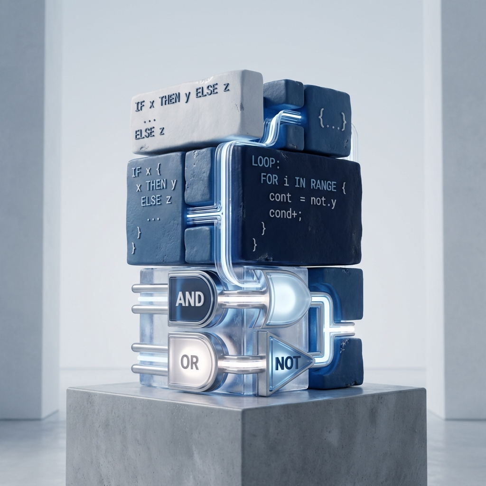

خارطة الطريق التعليمية
رحلتك من مبتدئ إلى محترف متخصص.

أساسيات البرمجة
إتقان المنطق، ولغة البرمجة بايثون، والتفكير المعماري المطلوب لأي تقنية متقدمة.

اختر مسارك
تعمق في تخصصك المختار: هندسة الذكاء الاصطناعي أو أساسيات الأمن السيبراني.

التخصص المتقدم
وحدات النخبة حول صقل النماذج (AI) أو الأمن الهجومي والتكتيكات الدفاعية (Cyber).
مشروع التخرج
بناء تطبيق جاهز للإنتاج أو إجراء تدقيق أمني كامل لإثبات الإتقان.